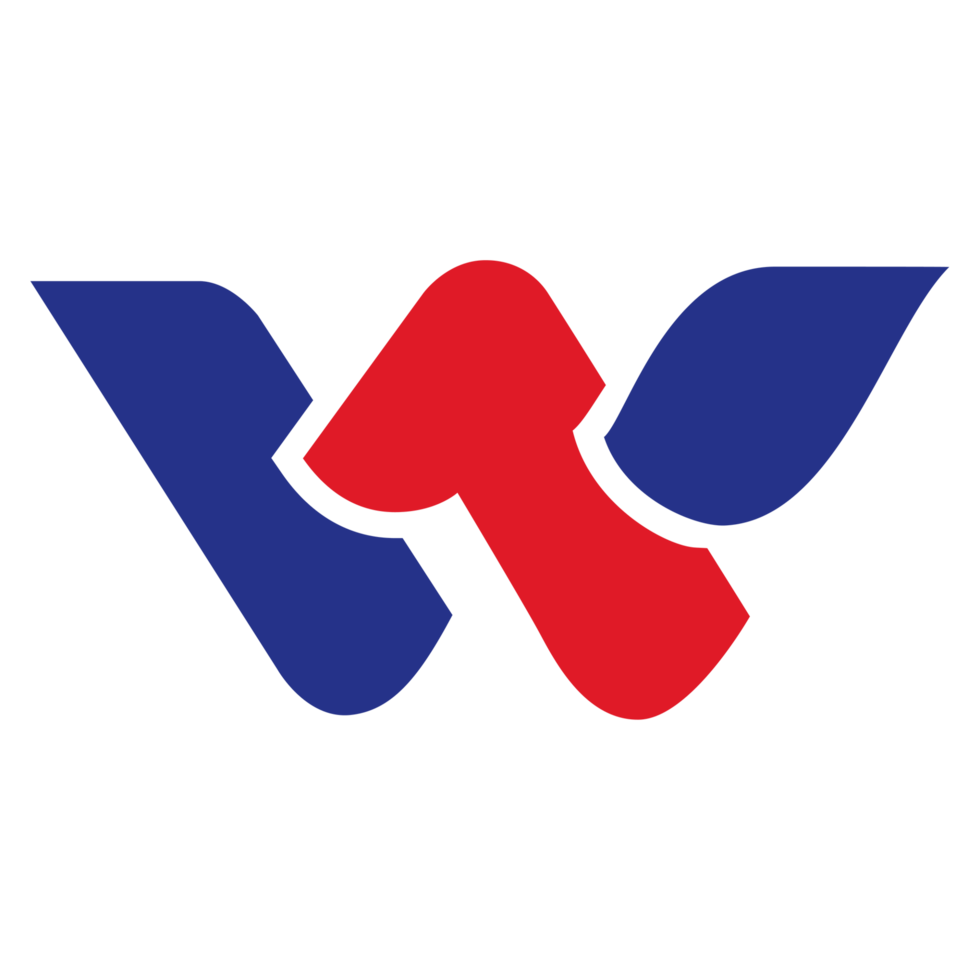
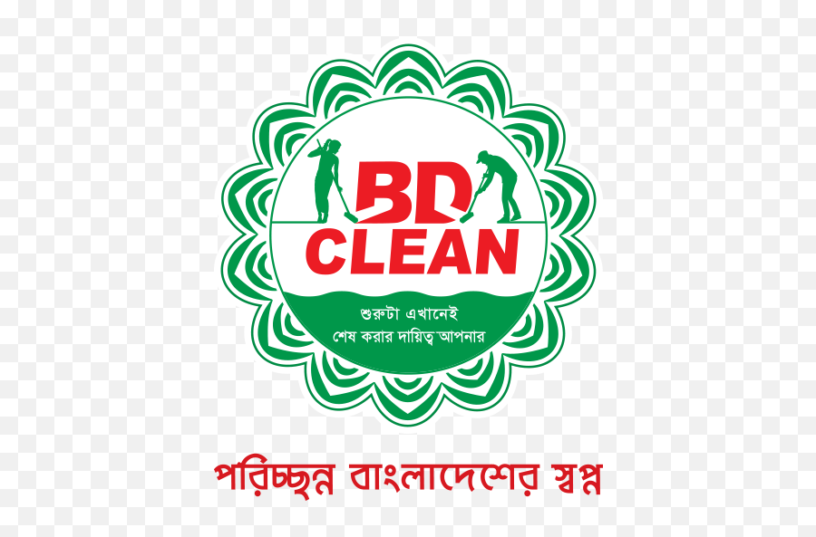

Artificial Intelligence • Machine Learning • Software Engineer • Data Science
SOFTWARE ENGINEER | AI/ML ENGINEER | MLOPS ENGINEER
Building intelligent systems from data to deployment.
I’m Md. Estiak Rahman Ayon, a Computer Science graduate from AIUB with experience in Machine Learning, MLOps, vision-language systems and full-stack software development.
Available for opportunities
01 / ABOUT
Engineering with purpose.
Computer Science graduate from American International University-Bangladesh with experience in Machine Learning and Software Engineering.
I work on practical software and AI projects with hands-on experience in full-stack development, machine learning pipelines, and MLOps workflows. I enjoy developing scalable applications, solving real-world engineering problems, and exploring modern AI technologies with a focus on building efficient and reliable solutions.
02 / EXPERIENCE
Industry experience.

February 2026 – April 2026
COMPLETED
Software Engineer Intern
Walton Hi-Tech Industries PLC
Gazipur, Bangladesh
- Built and maintained internal web applications for manufacturing operations using PHP and MySQL.
- Implemented role-based access control and approval workflows for different departments.
- Developed responsive interfaces using JavaScript and Bootstrap.
- Gathered requirements from production-line operators and demonstrated released features.
03 / SELECTED PROJECTS
Things I’ve built.
04 / PUBLICATION
Research work.
ONGOING · MANUSCRIPT IN PREPARATION
BanglaCXR: A Two-Stage Vision-Language Pipeline for Bangla Chest X-Ray Radiology Report Generation
An undergraduate thesis focused on generating chest X-ray radiology reports in clinical Bangla using an efficient two-stage vision-language pipeline.
RESEARCH AREA
Computer Vision and Natural Language Processing
MODEL ARCHITECTURE
RAD-DINO, Phi-3.5 Mini and NLLB-200
MODEL EFFICIENCY
4-bit QLoRA on a single 8 GB GPU
PERFORMANCE
0.8882 F1 and 0.9795 recall
05 / SKILLS
Technical expertise.
90% represents technologies used in projects or professional work. 80% represents technologies currently being learned or explored.
06 / EDUCATION
Academic foundation.
September 2022 – August 2026
COMPLETED
Bachelor of Science in Computer Science and Engineering
American International University-Bangladesh (AIUB)
Visit university
June 2019 – February 2021
COMPLETED
Higher Secondary Certificate
Shafipur Ideal Public School & College (SIPC)
Visit institution07 / CERTIFICATES
Credentials and learning.
08 / VOLUNTEERING
Community involvement.

7 November 2023 – 8 November 2023
Gazipur, Bangladesh
Community Volunteer
BD Clean
- Participated in grassroots public cleanliness and environmental initiatives across Gazipur.
- Helped promote responsible civic waste management and sustainable hygiene practices.
- Collaborated with regional volunteer teams to coordinate community clean-up initiatives.
GET IN TOUCH
Have an opportunity
or an idea?
Let’s talk.
I am interested in Software Engineering, AI/ML, MLOps, research and postgraduate opportunities.
estiakayon@gmail.com ↗